Usage
Prerequisites
Create a Reloaded Mod
Follow the guidance in the Reloaded wiki to create a new Reloaded mod.
Download Mod
Note
This image needs updated.
If you don't have it already, download the Persona 5 Royal Essentials Mod.
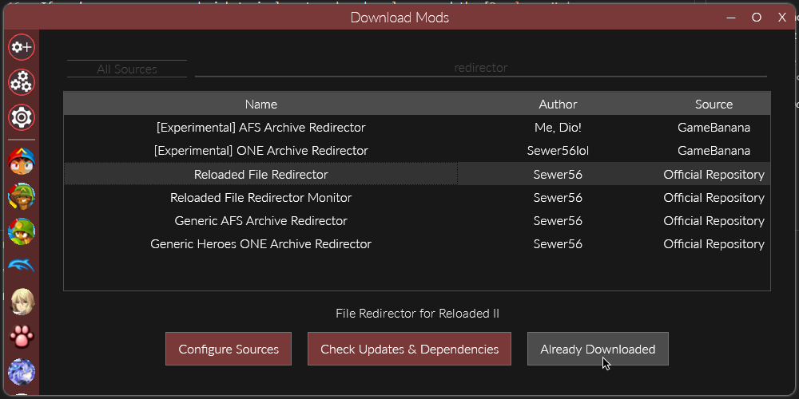
Set Dependency on P5R Essentials
In the Edit Mod menu (right click your mod in mods list) we're going to add Persona 5 Royal Essentials as a dependency.
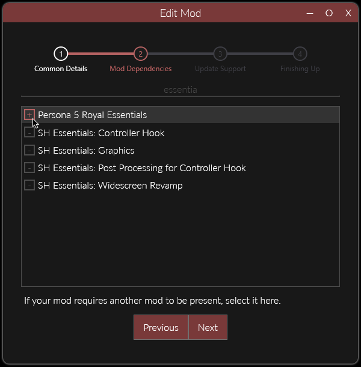
Adding a 'dependency' to your mod will make it such that P5R Essentials will always be loaded when your mod is loaded. This is a necessary step.
Replacing files in CPKs
Info
Files inside CPKs can be replaced by creating a folder called P5REssentials/CPK in your mod, and adding folders corresponding to the names of the CPKs inside those folders.
Opening the Mod Folder
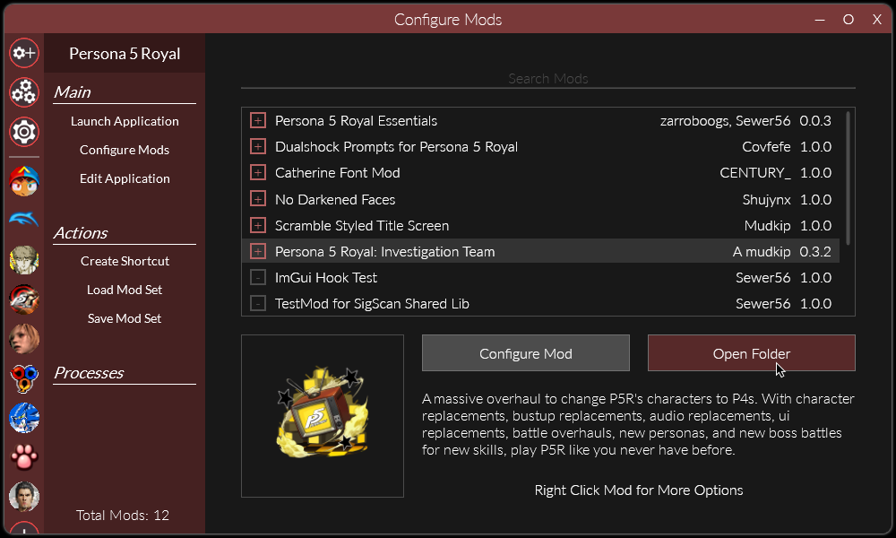
Go to the folder where your mod is stored, this can be done by simply clicking the Open Folder button.
Add Some Files
Make a folder called P5REssentials, and inside that a folder called CPK.
Inside that folder, make a folder [or multiple!] where you will store your mod files (you can call it anything you want!).
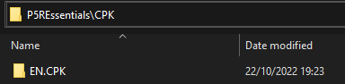
I used EN.CPK for clarity to match the game's structure.
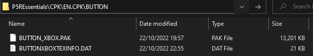
We will replace these two files to enable different button prompts 😇.
The contents of our mod folder would now look as follows.
// Mod Contents
ModConfig.json
Preview.png
P5REssentials
└─CPK
└─EN.CPK
└─BUTTON
├─BUTTON_XBOX.PAK
└─BUTTONXBOXTEXINFO.DAT
The connectors └─ represent folders.
Replacing Music
Info
Essentials can be used to replace audio inside AWB & ACB pairs.
Uses FileRedirectionFramework under the hood, follow instructions here for more information.
Don't add dependency on AWB emulator (it's not necessary), but do follow rest of guide.
Example
As per usage guide above.
This works the same as it does in Persona 4 Golden 64-bit/2023 version.
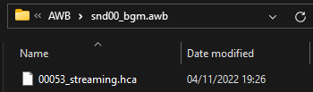
Replaces 53rd audio track (Signs of Love).
Warning
Encryption keys/scheme on the ADX/hca audio must match original file.
[Can someone please link Amicitia or other relevant wiki here??]
Replacing Files In Archives
Info
Essentials can be used to replace individual files in archives such as PAK, BIN, PAC, and ARC
Uses FileRedirectionFramework under the hood, follow instructions here for more information.
Don't add dependency on PAK emulator (it's not necessary), but do follow rest of guide.
Example
As per usage guide above.
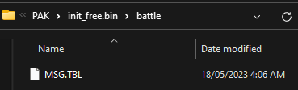
Replaces battle/MSG.TBL in init_free.bin.
Editing BF Files
Info
Essentials can be used to edit the procedures and messages in BF files such that multiple mods can edit the same file.
Uses FileRedirectionFramework under the hood, follow instructions here for more information.
Don't add dependency on BF emulator (it's not necessary), but do follow rest of guide.
In addition to the .flow and/or .msg files you include in FEmulator\BF per the above guide you will also need to add dummy bf files where they would normally go in FEmulator\PAK or P5REssentials\CPK.
Example - Loose BF
Info
To create a dummy bf file you can create a new empty text file and just rename it, changing the file extension.
To edit the loose e860_034a.bf file in event_data\script you would first add a dummy bf file in P5REssentials\CPK\data_e.cpk\event_data\script
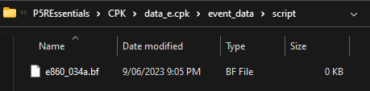
Then you would put your .flow or .msg file with the same name in FEmulator\BF
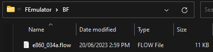
Example - BF In Archive
To edit f007.bf in the archive field\pack\fd007_003.arc you would first add a dummy bf file in FEmulator\PAK\field\pack\fd007_003.arc (as per the information above)
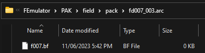
Then you would put your .flow or .msg file with the same name in FEmulator\BF
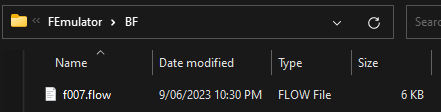
Editing BMD Files
Info
Essentials can be used to edit messages in BMD files such that multiple mods can edit the same file.
Uses FileRedirectionFramework under the hood, follow instructions here for more information.
Don't add dependency on BMD emulator (it's not necessary), but do follow rest of guide.
In addition to the .msg files you include in FEmulator\BMD per the above guide you will also need to add dummy bmd files where they would normally go in FEmulator\PAK or P5REssentials\CPK.
Example - Loose BMD
Info
To create a dummy bmd file you can create a new empty text file and just rename it, changing the file extension.
To edit the loose e722_103.bmd file in event_data\message you would first add a dummy bmd file in P5REssentials\CPK\en.cpk\event_data\message
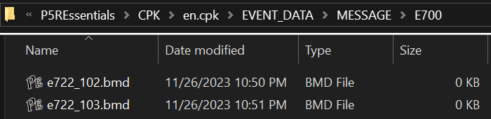
Then you would put your .msg file with the same name in FEmulator\BMD
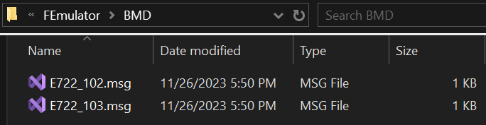
Example - BMD In Archives
To edit datSkillHelp.bmd in the archive init\datmsg.pak you would first add a dummy bmd file in FEmulator\PAK\init\datmsg.pak (as per the information above)
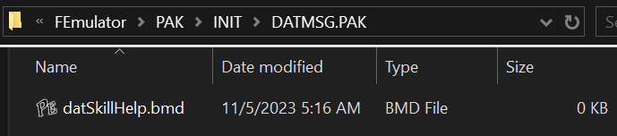
Then you would put your .msg file with the same name in FEmulator\BMD
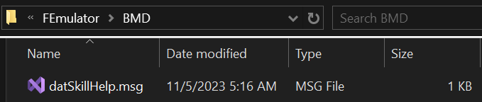
Editing TBL Files
Any TBL files in P3P, P4G and P5R (such as SKILL.TBL and UNIT.TBL) will automatically be merged if multiple mods edit them. This includes itemtbl.bin in P4G and P3P.
Embedded BF in AICALC.TBL
In P3P and P4G AICALC.TBL contains two embedded bf files, friend.bf and enemy.bf.
To edit these place a dummy bf with the same name in FEmulator\PAK\init_free.bin\battle and then hook anything you want to the same way you would any other bf file.
Embedded BMD in MSG.TBL
In P3P and P4G MSG.TBL contains an embedded bmd file, msgtbl.bmd.
To edit it, place a dummy bmd with the same name in FEmulator\PAK\init_free.bin\battle and then hook anything you want the same way you would any other bmd file.
Editing SPD Files
Info
Essentials can be used to edit textures and sprites in SPD files such that multiple mods can edit sprites in the same texture.
Uses FileRedirectionFramework under the hood, follow instructions here for more information.
Don't add dependency on SPD emulator (it's not necessary), but do follow rest of guide.
In addition to the sprite entry files (.spdspr/.sprt) and/or textures (.dds/.tmx) files you include in FEmulator\SPD per the above guide you may need to add dummy spd files where they would normally go in FEmulator\PAK (only if the spd you're editing is located in an archive).
Example - Loose SPD
To edit the loose CHAT.SPD file in FONT\CHAT you would first create a directory mimicking the path of the spd in FEmulator\SPD, including the spds filename.
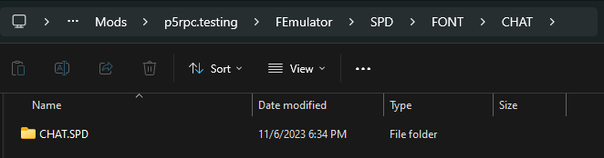
Then you would put your sprite entry and/or texture files in FEmulator\SPD\FONT\CHAT\CHAT.SPD\
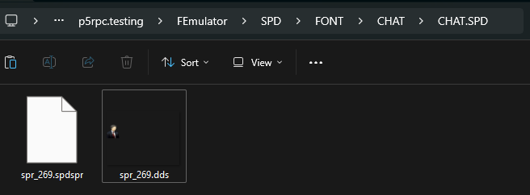
Example - SPD in archive
Info
To create a dummy spd file you can create a new empty text file and just rename it, changing the file extension.
To edit higawari_common.spd in the archive CALENDAR\HIGAWARI.PAK you would first add a dummy spd file in FEmulator\PAK\CALENDAR\HIGAWARI.PAK (as per the information above)
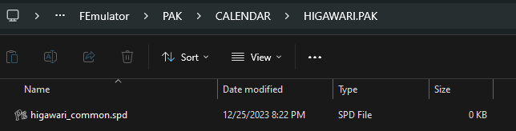
Then follow the steps for loose spds.
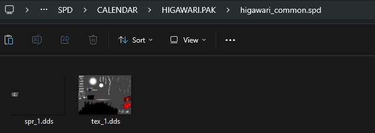
Supporting Multiple Languages
Persona Essentials has integration with Localisation Framework to help you make your mods support multiple languages. By adding files as described in its documentation you can have different versions of any type of file for each language. The framework will automatically determine what language the user is playing in and use the correct ones.
Example - BMD
Say you have edited the BMD file E722_103.bmd in EVENT_DATA\MESSAGE as described in Example - Loose BMD and want it to work in Japanese.
As per that section, you will have a msg file at FEmulator\BMD\E722_013.msg with your English messages.
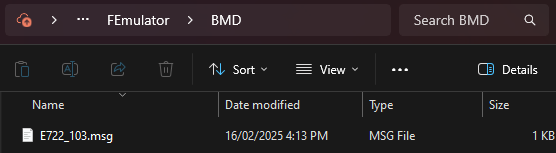
To support Japanese you would place a corresponding msg file with Japanese text in FEmulator\L10N\ja\E722_013.msg.
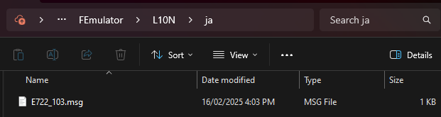
To support more languages you would add more copies of that file in the folder FEmulator\L10N\{langCode} where {langCode} is the id of the language listed in the Localisation Framework documentation.
Releasing/Uploading your Mods
Please refer to the Reloaded wiki, and follow the guidance.
You should both Enable Update Support AND Publish according to the guidelines.
It is recommended to enable update support even if you don't plan to ship updates as doing so will allow your mod to be used in Mod Packs.